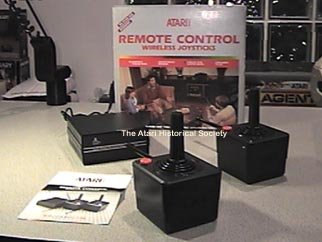
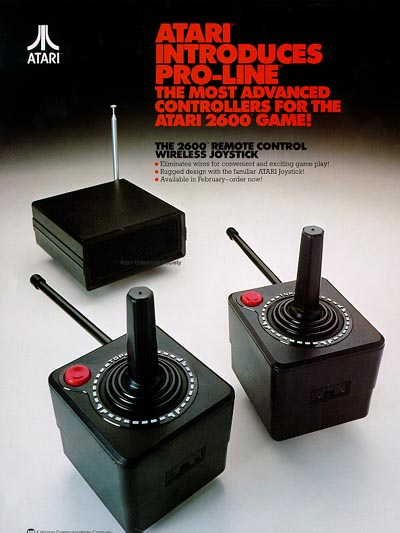

The Atari 2600 Remote
Controlled Joystick

Perhaps a spin-off from the Atari 2700 remote controlled console, the Atari
2600 remote controlled joysticks allowed players the freedom of setting
back away from the console comfortably on the couch and play their favorite
games in total confort... (not exactly!) The joysticks were
huge! I mean a standard Atari 2600 joystick with a base almost
3 times thicker than a regular joystick, it also weighed a bit too much
for extended play, then of course your right in the middle of the best
game of your life, your about to turn the game over and... WHAT?!?!?
WAIT?!?!?!?! WHY ISN'T IT RESPONDING!?!?!? Guess
what. Your batteries ran too low and there's no pause button in sight.

RC Joysticks Sales/Promo Sheet